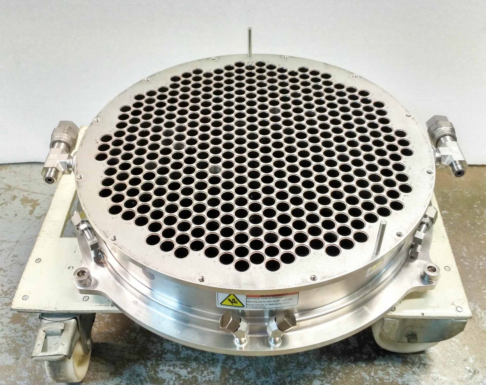
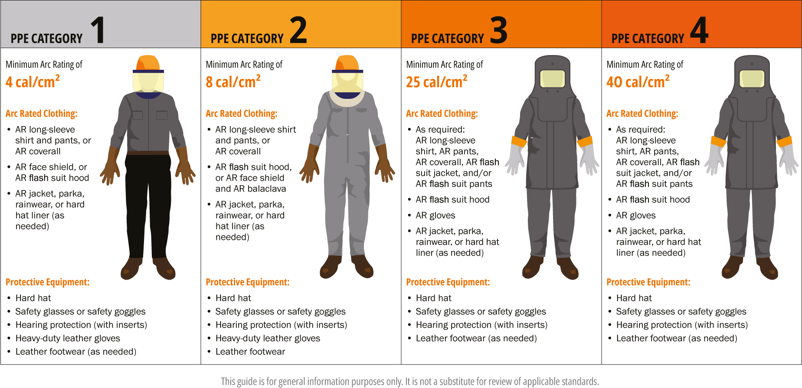
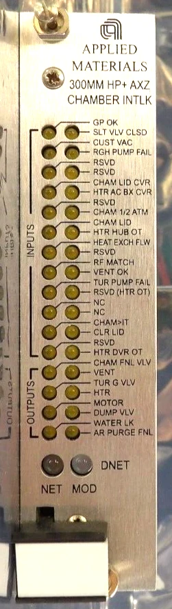
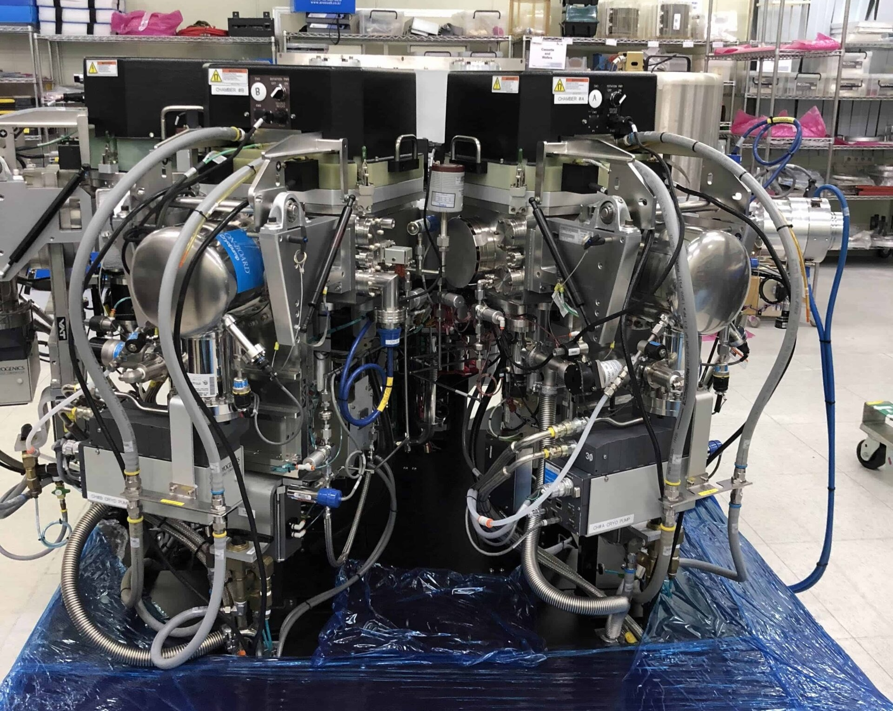
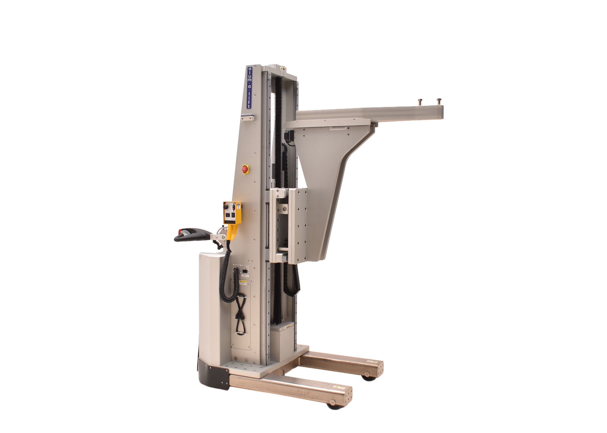
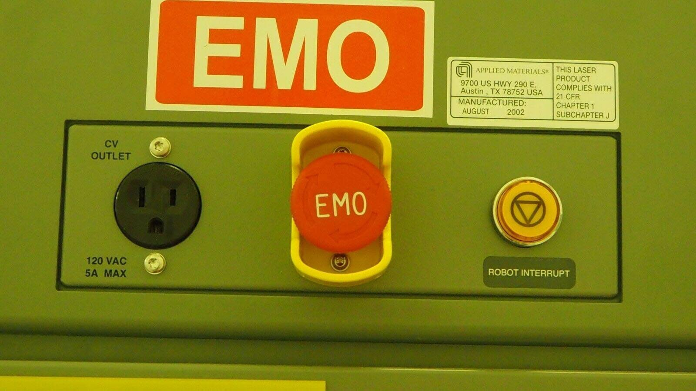

In-depth look at semiconductor fab safety protocols and systems.
Semiconductor Fabs I: The Equipment
Semiconductor Fabs II: The Operation
Semiconductor Fabs III: The Data and Automation
Semiconductor Fabs IV: The Safety
I tried to include as many links as possible to allow the reader to go down rabbit holes as they see fit.
I like anecdotes because they give a glimpse into what fab culture is like. They also tend to be funny.
I don't work in an advanced or new fab, but have some glimpses into them.
Semiconductor Fabs III: The Data and Automation discusses why automation is so important in a fab from a material perspective: it's faster, safer, easier, and cheaper. But it also applies physical safety as well. Humans in the loop can be catastrophic—they misinterpret something, make the wrong decision, perform the wrong action, or be really stupid. Having physical connections, electrical signals, and default safe conditions do the work minimizes the chance of taking the wrong action and enforces stupidity, just in the way that computers are stupid and do exactly what they're told to.
Sometimes safety mechanisms must be overridden for legitimate reasons. When this happens, it shouldn't be an accident or something someone stumbled upon. Instead, it should be the physical equivalent of those annoying pop-up boxes making sure that continuing is the desired acton. This almost feels like the equivalent of long-term nuclear waste warning messages: as one gets closer to fully overriding some protective measure, it should be more obvious that they probably shouldn't be doing that.
Safety should be easy. Doing the right thing should be easy. Doing the wrong thing should be difficult (see section directly above) and inconvenient. Trivial inconveniences exist and apply in the fab, even if the rules try to claim they don't. People will be unsafe if being safe is too much of a pain in the ass.
Some examples of making safety easy and convenient:
When in doubt, take a step back and get a better idea. Some organizations use the PAUSE methodology (pause, assess, understand, share, execute), which is great! It gives someone who is uncomfortable a way to assess the situation at hand before continuing.
Everyone should be better safe than sorry (injured, maimed, dead). This could mean stopping work until someone more experienced can work on it, asking for help, or refusing to do something outright because it is a safety concern.
Reportable incidents are defined by OSHA as:
when an employee is killed on the job or suffers a work-related hospitalization, amputation, or loss of an eye
Since I'm not an expert on OSHA violations, I asked Claude Sonnet 5 to summarize what happens:
When a semiconductor fab has a fatality, in-patient hospitalization, amputation, or loss of an eye, the clock starts immediately: employers must report a death to OSHA within 8 hours, and a hospitalization, amputation, or eye loss within 24 hours. Failing to report on time is itself a separate, citable violation under 29 CFR 1904.39.
Fatalities almost always trigger a full OSHA inspection, and severe injuries frequently do — especially in a hazard-dense environment like a fab, with toxic gases, high-voltage equipment, and cleanroom chemical exposure. Employers are also required to preserve the incident scene until OSHA releases it, which can mean idling the affected tool or line for days or weeks while the investigation runs.
If OSHA finds violations, the fines add up fast. As of 2026, serious or other-than-serious violations carry penalties of up to $16,550 each, while willful or repeat violations can reach $165,514 per violation — and a single inspection often produces multiple citations, so totals can climb into six or seven figures. Willful violations tied to a worker's death can also trigger criminal referral.
The costs that outlast the headline fine are often the bigger operational hit: a spike in the company's workers' compensation experience modification rate (raising premiums for years), disqualification from safety-prequalified client contracts, and — for repeat or egregious cases — placement in OSHA's Severe Violator Enforcement Program, which brings mandatory follow-up inspections. For a fab, where a single tool going down can stall an entire process flow, the downtime from a scene-preservation hold or a corrective-action order is frequently more costly than the citation itself.
And to add to the cost of downtime portion:
A semiconductor fab is among the most demanding 24/7/365 operating environments in any industry. The consequences of downtime are not measured in inconvenience — they are measured in scrapped wafer lots, tool re-qualification cycles, and production gaps that cascade through customer supply chains for weeks after the event that caused them. A one-hour unplanned outage at a leading-edge fab running 60,000 wafer starts per month represents approximately $2–5M in lost production value, plus the cost of any in-process lots scrapped, plus the tool recovery and re-qualification labor before production can resume. A 24-hour outage at the same facility approaches $50–100M in combined direct and indirect impact.
Being known as an unsafe company speaks volumes about the culture, repelling potential talent and pushing them towards places where they know they'll get to see their family at the end of the day.
Let's first dispel the myth that the cleanroom suits fab personnel wear are for the people's safety. They are not. They are for the chip's safety. They serve to prevent the wearer's skin and hair from getting onto the chips. We lose a fair amount of skin and hair every day and any of that falling on a chip can be catastrophic, even existential. Why risk this when you can simply doom your wage slaves to a day of sweat, discomfort, and modesty?
Next, we'll move onto a fit check. Safety glasses? Check. But those better be ANSI Z87.1 or OSHA will want a word. Z87.1 is focused on minimizing and/or preventing injuries such as "impact, non-ionizing radiation and liquid splash exposures in occupational and educational environments such as machinery operations, material welding and cutting, chemical handling, and assembly operations". Fabs are a place where liquid can splash, parts can fall through the floor into the subfab below, and both very high and very low pressure environments can fail (also known as explode and implode, respectively) if the right sequence of events happens. I'd want to protect my eyes, too!

Shoe-wise, some folks like rocking the Nike Fab 11s, which is my overused joke for steel-toed boots. (Nike or Jordan really should start supplying cleanroom boots for the collab potential—just imagine a TSMC x Air Jordan.) Fabs are basically just filled with super fancy, super expensive machinery. And machinery comes with heavy parts that people may need to carry around. I'd want to protect my toes from a big block of steel from falling on them, too! (To be clear, steel-toed boots aren't required at my fab, but can be purchased.)
That's about it for mandatory clothing. Wear some safety glasses, wear something on your feet, and wear a bunny suit. What's between the bunny suit and skin is pretty much up to the person, and I've seen some questionable shirts while walking through the office!
Sometimes special garments must be donned for safety purposes, generally when someone is entering an area where special dangers exist.
There are a lot of acids in a fab: hydrofluoric, sulfuric, phosphoric, just to name a few. All of them are harmful to the human body.
Arc flashes are no joke and will fry your skin to a crisp if you aren't wearing equipment. If you are wearing equipment, then at least it'll be an open casket funeral. Electrical work in certain areas, especially when "hot" (or electricity is live), requires arc flash equipment that is not dissimilar to a bomb suit (which it's colloquially called by electricians), minus the protection against shrapnel.

Hard hats are required in spaces where you can easily hit your head on something or parts can fall down from above. Some people wear bump caps in confined spaces to protect against bumps, but they are no substitute for hard hats when falling objects are a risk.
Robotic dexterity hasn't caught up to humans yet, so we still occasionally have to do some nasty work with gases and chemical that requires self-contained breathing apparatuses (SCBA; note the lack of a 'U'(nderwater) since fabs aren't underwater). SCBA users get fit checks before using it to ensure the mask seals securely against their face. Not coincidentally, it's also the only time some people shave their beards (so the mask fits better, else the hair would cause leaks).
The practice that keeps you safe 99% of the time—where the 1% is the unpredictable, unexplainable, unstoppable shit that very rarely happens, and much less often affects someone when it does happen—is pretty simple: don't be an idiot. I stop and ask myself "if someone else did this and got hurt because of it, would I think they're an idiot?" before doing something potentially dangerous and if the answer is yes, I reassess my strategy and refine my plan until the answer is no. There are other, more official strategies like PAUSE.
Not on the via negativa side of things, being a clear, loud communicator is important when working with a partner. There are many loud noises and dangerous situations that require messages to be received correctly lest the receiver act based on an incorrect message.
My modus operandi is a command-acknowledgement structure of:
From Wikipedia:
An interlock is a feature or device that is commonly used in engineering and safety systems to keep machines, devices, and processes from operating until the guards are in place or the required circumstances are met. When being utilized, interlocks are used to prevent or reduce the chances of injury to the operator, damage to the equipment, and actions being completed in the wrong order or in an unsafe way.
Fab equipment is filled with interlocks of various types:
What are some examples of interlocks? Let's look at this random interlock card I found on the internet! The lights will be on if the interlock is satisfied to help personnel understand any issues that are preventing the chamber from operating.

Going down the list:
Why would someone want to override these interlocks? After all, they're there for our safety! Sometimes overriding interlocks is needed to troubleshoot. For example, watching problematic robots move while troubleshooting is very helpful in order to hear noises, feel vibrations, watch for jerky movements, etc. But often times the only way to get a clear view is to override interlocks. The equipment manufacturers understand this and make it easy enough to override interlocks while ensuring it's intentional.
Tools have alarms that will result from abnormal conditions, which aren't necessarily always a safety hazard.
Equipment parts can be heavy and often cumbersome to lift because the equipment's small footprint doesn't allow for personnel to get easy leverage on said parts. It can be a jungle inside, underneath, or on top of equipment!

Equipment manufacturers will often include various ergonomic fixtures to help personnel with maintenance. Examples may include motorized cranes that can assist with lifting parts straight up and down instead of forcing personnel to come from the side;
If custom solutions are required, then fabs can outsource to companies who will build tools to their specification. For example, take this lift from Alum-a-Lift:

All equipment comes equipped with emergency off (EMO) buttons at strategic locations to maximize accessibility to the button. When pressed, the entire tool and anything connected to the EMO circuit shuts off immediately because the physical connection is severed.
Why would someone want to press the EMO button? Here are some example reasons:

I've pressed an EMO button once in my life, but that was at my university fab and because of a major operator error. EMO presses at the industrial level are rare because of how well the equipment is designed and the people are trained. You do not want to press the EMO! If you are pressing the EMO, your day is probably really bad or about to get really bad! (Okay, okay, pressing the EMO is kind of fun because of how forbidden it is and its nice tactile feel, so if the equipment is ever off do yourself a favor and get a press in.)
The building itself—the foundation, the trusses, the waffle floor—isn't anything special, but rather the features and systems that interact with the equipment and facilities.
NPFA 318: Standard for the Protection of Semiconductor Fabrication Facilities "presents requirements to safeguard facilities containing cleanrooms from fire and related hazards to protect against injury, loss of life, and property damage". (Note the linked document is from 2006 because I couldn't find an updated one on the internet.) Here are some nice features:
Optical flame detectors that will respond to the flame signature of silane shall be provided at silane gas cylinders in the open dispensing systems described in Section 8.4. Activation of detectors shall result in the closing of the cylinder automatic shutoff valves described in 8.1.2.
A local visual and audible alarm shall be provided to indicate activation of any interlock. [Intentionally silencing the alarm is much better than not hearing it at all.]
Tools utilizing hazardous chemicals shall be designed to accept inputs from monitoring equipment. [This allows the monitoring equipment to tell the tool to shut off because something is wrong.]
They seem to really care about silane given it has two subsections and one main section devoted entirely to the gas!
Some gases that fabs use have very low median lethal doses (arsine to phosphine), low flammability limits, or are asphyxiants. Gas detectors are placed at strategic locations to maximize detection capabilities so the faster it's detected, the sooner it can be stopped and fixed.
Some places that gas detectors are located:
Some gases are housed in double-walled pipes, where the pipe that carries the main gas is enclosed within another pipe filled with an inert gas, such as nitrogen. This creates an added layer of safety and immediately dilutes the dangerous gas.
I've heard some crazy health-related rumors throughout my fab life: exposure to photoresist will cause men to become sterile; photoresist will cause women to only have female children; working in a fab will make you go clinically insane because of the long hours and insane pressure and mind-boggling physics that make magic seem real.